AP Courses
Not all AP Courses are equally difficult. It depends on what your abilities are, but APs like AP Human Geography tend to be easier than APs like AP Physics or AP Chemistry. I can provide my evaluation of the tiers of difficulty of the AP courses if frequently requested, but I am very hesitant to do so. Your course choices should be based on what interests you; you’ll do better in the class and it well help foster your intellectual curiosity. It should not be based on what might be ‘easier.’
Another thing about AP tests that I was disheartened to find out is that AP tests are not weighted very highly in the eyes of admissions officers. I found the AP tests to be a large focus for me throughout my high school career, and it is certainly good to do well on them, but AP scores are often more of a boost or weakness to your application than an influential factor. So, don’t stress too much about imperfect AP scores.
Still, particularly if you end up at a college that offers credit for AP scores- getting good AP scores is very helpful.
AP Scoring
It is a good idea to look at the score distribution chart on total registration to see what percentage of students get each score.
Total Registration- 2016 AP Exam Score Distributions
Although the strength of the students taking each exam varies, this chart can be useful to start to get an idea of how difficult it is to get a certain score.
AP Tests
I’ll recommend AP study books based on personal use, recommendations, and extensive research.
List of All AP Exams:
Math And Computer Science:
AP Calculus AB,
AP Calculus BC,
AP Computer Science A,
AP Computer Science Principles,
AP Statistics
English:
AP English Language and Composition,
AP English Literature and Composition
Sciences:
AP Biology,
AP Chemistry,
AP Environmental Science,
AP Physics C: Electricity and Magnetism,
AP Physics C: Mechanics,
AP Physics 1: Algebra-Based,
AP Physics 2: Algebra-Based
History And Social Science:
AP Comparative Government and Politics,
AP European History,
AP Human Geography,
AP Macroeconomics,
AP Microeconomics,
AP Psychology,
AP United States Government and Politics,
AP United States History,
AP World History
Arts:
AP Art History,
AP Music Theory,
AP Studio Art: 2-D Design,
AP Studio Art: 3-D Design,
AP Studio Art: Drawing
World Languages And Cultures:
AP Chinese Language and Culture,
AP French Language and Culture,
AP German Language and Culture,
AP Italian Language and Culture,
AP Japanese Language and Culture,
AP Latin,
AP Spanish Language and Culture,
AP Spanish Literature and Culture
AP Capstone:
AP Research, AP Seminar
College Board- AP List
Biology
This teacher, Mr. J, has awesome videos that cover the AP Biology curriculum and tests really well. I used his videos to study and did very well in the class and got a 5 on the exam.
Youtube- Mr.J's channel
The two study books that seem the most helpful are these two:
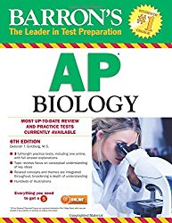Amazon Link to 'Barron's AP Biology, 6th Edition'
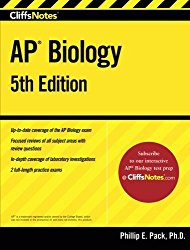
Amazon Link to 'CliffsNotes AP Biology, 5th Edition (Cliffs Ap Biology)'
It is hard to get a 5 on the Biology exam, so if you are shooting for a five then study extensively. Only 6.3% of students got a five in 2016.
Back To List
U.S. Government and Politics
The U.S. Government and Politics Crash Course videos are very useful for AP Gov. They work great as a supplemental review but can probably function as a primary study resource if you watch the videos enough.
Youtube- US Government Crash Course
The two study books that seem the most helpful are these two:
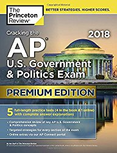Amazon Link to 'Cracking the AP U.S. Government & Politics Exam 2018, Premium Edition (College Test Preparation)'
If you like flashcards this book is ideal:
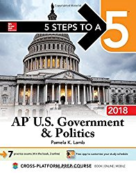Amazon Link to '5 Steps to a 5: AP U.S. Government & Politics 2018 edition (5 Steps to a 5 Ap U.S. Government and Politics)'
The Gov exam has a less lenient curve than other APs because the questions on the exam are fairly straightforward. Be careful as you take it and treat it like a real school test.
Back To List
Macroeconomics and Microeconomics
This channel, ACDCLeadership, has videos that cover the AP economics content thoroughly.
Macroeconomics playlist:
Youtube- ACDC Leadership Macroeconomics Playlist
Microeconomics playlist:
Youtube- ACDC Leadership Microeconomics Playlist
Good study book if you are taking both econs:
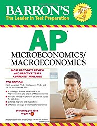Amazon Link to 'Cracking the AP Economics Macro & Micro Exams, 2018 Edition: Proven Techniques to Help You Score a 5 (College Test Preparation)'
Macroeconomics book:
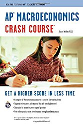Amazon Link to 'AP® Macroeconomics Crash Course Book + Online (Advanced Placement (AP) Crash Course)'
Microeconomics book:
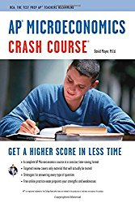Amazon Link to 'AP® Microeconomics Crash Course Book + Online (Advanced Placement (AP) Crash Course)'
Both macro and micro have around 15% of test takers getting fives. If you watch the videos and buy the Barron's book you're on the right path to that 15%.
Back To List
Calculus
My AP Calculus teacher recommended patrickJMT on youtube and he really does have great videos for studying Calculus.
Youtube- patrickJMT
His calculus review problems playlist:
Youtube- patrickJMT Calculus Review Playlist
AP Calculus Book (covers both AB and BC with 4 practice tests for each):
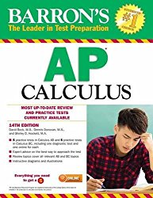Amazon Link to 'Barron's AP Calculus, 14th Edition'
AP Calculus has a very generous curve, but this is because the content can be quite difficult. The important thing is to not get overwhelmed; you only need around a 60% raw score on the AP test to get a five on the exam.
Back To List
English Language and Composition
Lang is a course that works on refining your writing and reading skills. Once you know the best way to write FRQs -arguing the uncommon opinion in the argument essay, analyzing how the rhetoric affects meaning and analyzing the passage chronologically for the rhetorical analysis, using most or all of the sources in the DBQ, etc- practicing is really the best way for you to study.
AP Language and Composition Book:
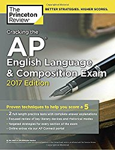Amazon Link to 'CliffsNotes AP English Language and Composition, 4th Edition'
Around 10% of students get a five on Lang. Pace yourself during the test and remember the techniques you learned in the class.
Back To List
Chemistry
The content in chemistry looks confusing and intimidating, but it is often very manageable.
Once you know all the formulas you often end up plugging numbers into them to find the answer; it isn’t always as complicated as it looks.
AP Chemistry Book:
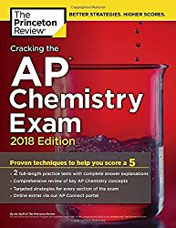Amazon Link to 'Cracking the AP Chemistry Exam, 2018 Edition: Proven Techniques to Help You Score a 5 (College Test Preparation) '
Around 10% of students got fives on AP Chemistry. Answer all the questions on the test using the formulas that seem the most applicable.
Back To List
Statistics
AP Stat can be a very manageable course. My AP Stat teacher encouraged me to put notes in my calculator so this might be something you can consider (as long as it is allowed at your school) for the course and AP test. The class is less math based and more logic and content based.
AP Statistics Book:
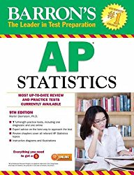Amazon Link to 'Barron's AP Statistics, 9th Edition'
About 14% of students got a five on Stat. Don't overcomplicate anything on the test and always revert back to the core principles -normal curve, random sampling, etc- if you get confused.
Back To List
English Literature and Composition
AP Lit, like Language and Composition, is more ability based than content based. Practicing analyzing poems and fiction is important to succeeding in Literature.
AP Literature and Composition Book:
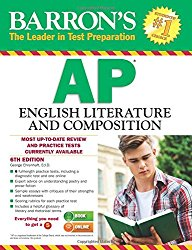Amazon Link to 'Barron's AP English Literature and Composition, 6th Edition (Barron's AP English Literature & Composition)'
Literature is a long exam so pace yourself. Only 7.4% of students got fives, so it is one of the harder exams statistically.
Back To List
European History
Euro is one of the more content dense APs. It requires a lot of studying and memorization.
AP European History Book:
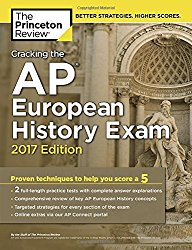Amazon Link to 'Cracking the AP European History Exam, 2018 Edition: Proven Techniques to Help You Score a 5 (College Test Preparation)'
7.9% of students got a five on Euro. Euro was actually the AP exam that I struggled with the most; you need to study extensively for this exam.
Back To List
Environmental Science
At my school AP Environmental Science is considered a little bit easier than the other science AP courses. It can still be a difficult course especially if you haven’t taken an environmental science course before the class.
AP Environmental Science Book:
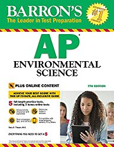Amazon Link to 'Barron's AP Environmental Science, 7th Edition: with Bonus Online Tests'
7.4% of students got a five on Environmental Science. Don’t just study the complicated parts of the course; you often know the ‘easy’ parts less than you think you do.
Back To List
US History
US History is a content based course, so the crash course videos are very helpful for review and for learning.
Youtube- US History Crash Course
AP US History Book:
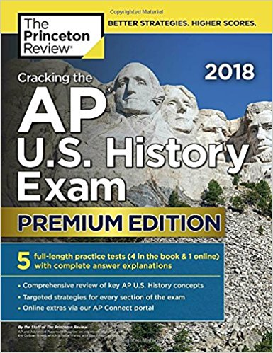Amazon Link to 'Cracking the AP U.S. History Exam 2018, Premium Edition (College Test Preparation)'
This is a fairly good (but not as thorough) and cheap US History book that preps you for both the AP test and Subject Test:
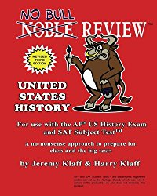Amazon Link to 'No Bull Review - For Use with the AP US History Exam and SAT Subject Test'
The history APs tend to require a lot of memorization. You have to study a lot and over the course of the year to do well. 11.7% of students got fives on US.
Back To List
World History
World History is a content based course, so the crash course videos are very helpful for review and for learning.
Youtube- World History Crash Course
AP World History Book:
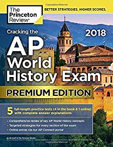Amazon Link to 'Cracking the AP World History Exam 2018, Premium Edition (College Test Preparation)'
The history APs tend to require a lot of memorization. You have to study a lot and over the course of the year to do well. Only 6.5% of students got fives on World History.
Back To List
Computer Science A
The class, in my experience, involves a lot of coding, but the exam is more knowledge based. You need to understand the basics of coding as well as how to use different coding tools -iterations, algorithms, etc- to solve problems or make a program.
Here is a very helpful review video for the course:
Youtube- Computer Science A Review
AP Computer Science A Book:
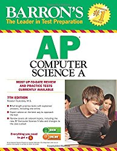Amazon Link to 'Be Prepared for the AP Computer Science Exam in Java'
20.7% of students got a five on AP Comp Sci. Just remember that even if you know how to code you still need to know other things for the exam.
Back To List
Computer Science Principles
AP Computer Science Principles is often seen as the class before AP Computer Science A and could arguably be considered a pseudo prerequisite.
AP Computer Science Principles Book:
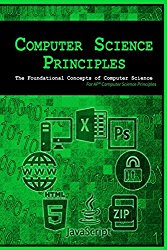Amazon Link to 'Computer Science Principles: The Foundational Concepts of Computer Science'
AP Computer Science Principles is a new AP so its difficulty is hard to gauge. Some students who have taken both AP Comp Sci A and Comp Sci Principles have felt that Comp Sci Principles is much more manageable for someone new to coding.
Back To List
Psychology
The crash course videos are helpful for AP Psych.
Youtube- Psychology Crash Course
AP Psychology Book:
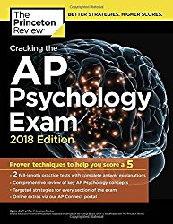Amazon Link to 'Cracking the AP Psychology Exam, 2018 Edition: Proven Techniques to Help You Score a 5 (College Test Preparation)'
19% of students got a five on Psych. The course content is lighter than most of the history/ social science exams; it is a mix of content and application.
Back To List
Spanish Language and Culture
AP Spanish requires a lot of study time and work and is probably one of the most time occupying AP courses.
AP Spanish Language and Culture Book (includes audio CD):
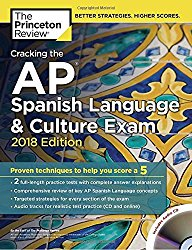Amazon Link to 'Cracking the AP Spanish Language & Culture Exam with Audio CD, 2018 Edition: Proven Techniques to Help You Score a 5 (College Test Preparation)'
28% of students got fives on AP Spanish.
Back To List
Physics 1
AP Physics 1 is the introductory physics course and is limited to strictly algebra 2 instead of calculus. It is the easier option as opposed to Physics C. The Bozeman science videos are helpful for Physics 1.
Bozeman AP Physics 1 Videos
AP Physics 1 Book:
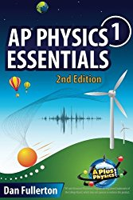Amazon Link to 'AP Physics 1 Essentials: An APlusPhysics Guide'
Only 4.3% of students got fives on Physics 1, but the caliber of student is not as high because if the student knew calculus or was willing to learn a little bit of calculus, then he/ she would be taking Physics C.
Back To List
Physics 2
AP Physics 2 is the second physics course (after Physics 1) if you want physics limited to strictly algebra 2 instead of calculus. The Bozeman science videos are helpful for Physics 2 as well.
Bozeman AP Physics 2 Videos
AP Physics 2 Book:
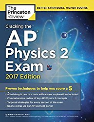Amazon Link to 'Cracking the AP Physics 2 Exam, 2018 Edition: Proven Techniques to Help You Score a 5 (College Test Preparation)'
Only 8.5% of students got fives on Physics 2, but the caliber of student is not as high because if the student knew calculus or was willing to learn a little bit of calculus, then he/ she would be taking Physics C.
Back To List
AP Physics C: Electricity and Magnetism and AP Physics Mechanics
Physics E+M is often taught second after Mechanics in AP Physics if it is taught at all (sometimes only Mechanics is taught in the AP Physics class). A lot of self studying is sometimes needed then to do well in E+M.
AP Physics C Book (covers E+M and Mechanics):
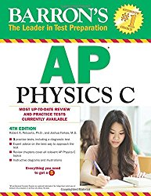Amazon Link to 'Barron's AP Physics C, 4th Edition'
Physics C is widely considered one of the hardest AP courses. 30.2% of students got fives on Mechanics and 32% on E+M. If you decide to take AP Physics be prepared for a lot of work and possibly a lot of self studying.
Back To List
Human Geography
AP Human Geography is sometimes considered one of the ‘easier’ APs. It still has quite a bit of content.
AP Human Geography Book:
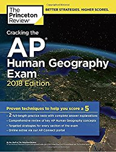Amazon Link to 'Cracking the AP Human Geography Exam, 2018 Edition: Proven Techniques to Help You Score a 5 (College Test Preparation)'
11.9% of students got fives on AP Human Geography.
Back To List
Comparative Government and Politics
The six governments that Comparative Gov looks at are Britain, China, Iran, Mexico, Nigeria, and Russia.
AP Comparative Government and Politics Book (very comprehensive and almost textbook-like):
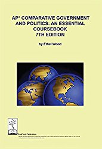Amazon Link to 'AP Comparative Government and Politics: An Essential Coursebook, 7th ed'
AP Comparative Government and Politics Book (more of a review):
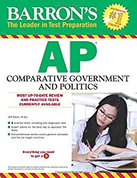Amazon Link to 'Barron's AP Comparative Government & Politics'
20.6% of students got fives on Comparative Gov.
Back To List
Art History
AP Art History is only manageable if you have a passion for the arts.
AP Art History Book:
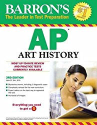Amazon Link to 'Barron's AP Art History, 3rd Edition'
11.1% of students got a five on Art History.
Back To List
French Language and Culture
AP French has a lot of content and requires familiarity with the French language before taking the AP course.
AP French Language and Culture Book:
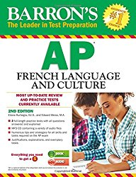Amazon Link to 'Barron's AP French Language and Culture with MP3 CD (Barron's AP French (W/CD))'
17.3% of students got a five on French Language and Culture.
Back To List
Italian Language and Culture
AP Italian has a lot of content and requires familiarity with the Italian language before taking the AP course.
AP Italian Language and Culture Book:
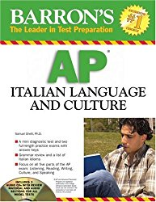Amazon Link to 'Barron's AP Italian Language and Culture: with Audio CDs'
21.8% of students got a five on Italian Language and Culture.
Back To List
Chinese Language and Culture
AP Chinese has a lot of content and requires familiarity with the Mandarin language before taking the AP course.
AP Chinese Language and Culture Book:
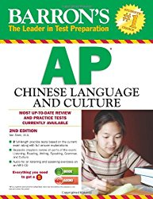Amazon Link to 'Barron's AP Chinese Language and Culture with MP3 CD, 2nd Edition'
62.1% of students got a five on Chinese Language and Culture.
Back To List
Music Theory
This course is ideal for students who are looking to major in music in college or who have a strong affinity for music.
AP Music Theory Book:
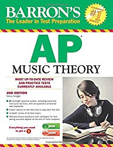Amazon Link to 'Barron's AP Music Theory with MP3 CD, 2nd Edition'
18.1% of students got a five on Music Theory.
Back To List
 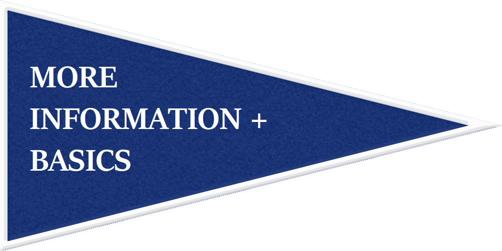
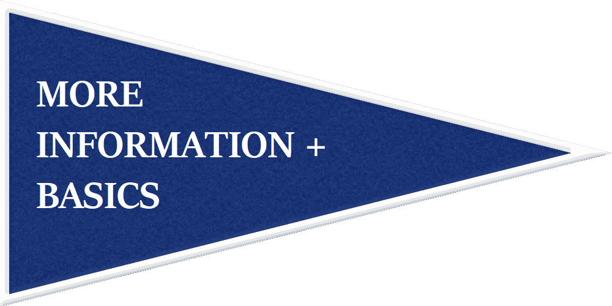